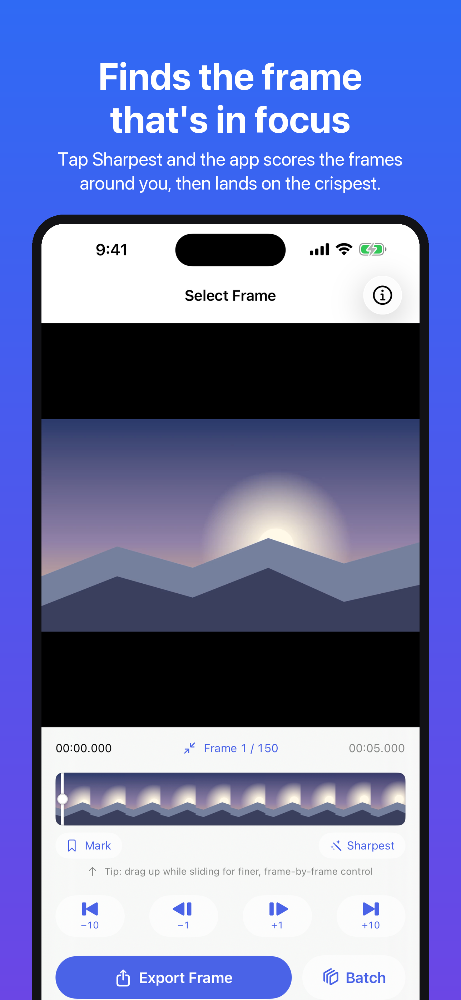
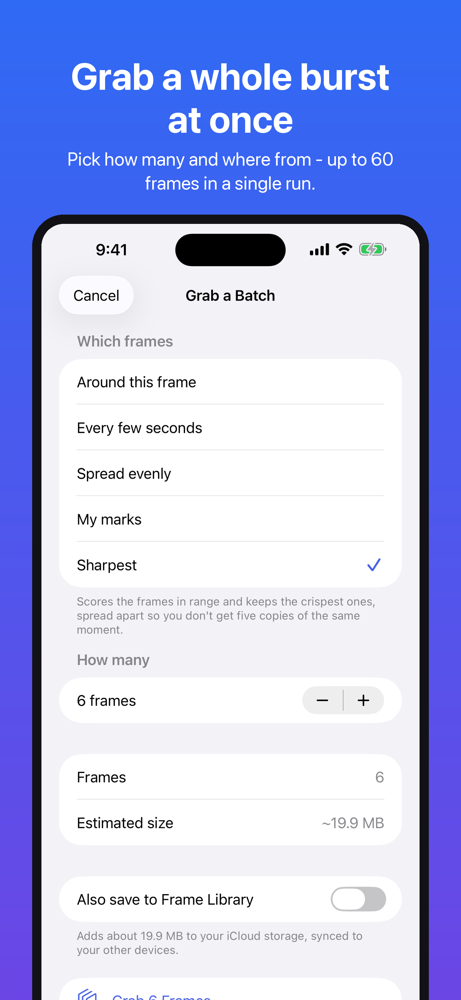
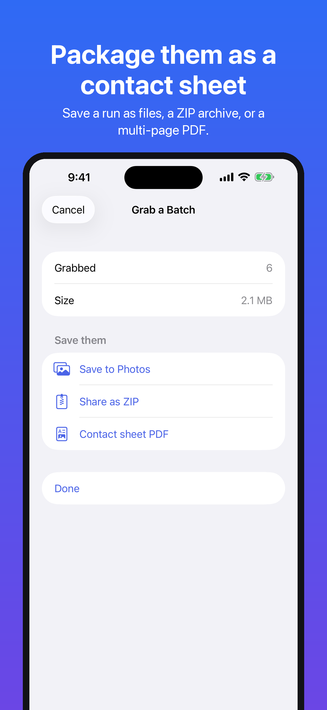

Find sharper moments and turn a video into a set of photos. iPhone & iPad. Version 1.0.5
Finding a useful still means comparing the moments around it. Sharpest scores nearby frames and selects the highest-scoring candidate, and a batch run takes up to 60 in one pass and packages them as a ZIP or a contact-sheet PDF you can hand to someone. Scrub a filmstrip, step by ±1 and ±10 frames, or jump straight to a timecode.
Built for the moments a screenshot cannot serve — sports finishes, a dog mid-leap, kids' first steps, product stills pulled from a walkthrough, a clean frame off a screen recording. Send a video in from any app’s share sheet, or open one straight from Files: Frame Grab never reads your photo library, and only ever asks to add the frames you save.



Use Sharpest to compare nearby frames by measured sharpness. It does not repair blur or guarantee that a moving subject is in focus. Use the preview and zoom to check the result.
Try a batch of 3 JPEG frames, then use Pro for up to 60 frames and ZIP or contact-sheet PDF packaging. For client selections, sports technique, or product walkthroughs, a contact sheet puts the candidates together for review.
Video to Photo: Frame Grab is free to use, with ads. Full native-resolution single-frame exports work on the free plan; the free plan exports as JPEG and is ad-supported: a banner on the Home screen, a short opt-in video you watch to unlock exports for a while, and occasionally a full-screen ad when you come back to the Home screen after being away for a few minutes.
The optional Pro upgrade unlocks:
Pro is sold as an auto-renewing subscription, or as a one-time purchase:
Subscriptions renew automatically and can be managed or cancelled at any time:
Settings → [your name] → Subscriptions → Video to Photo: Frame Grab
Cancel at least 24 hours before the end of the current period to avoid the next charge. To restore a previous purchase, tap Restore in the paywall.
Yes. The preview and the export are both decoded with zero time tolerance, so the on-screen image is the same frame that gets saved.
Up to the full native resolution of the source video — including 4K and above. Full resolution is free; Pro adds lossless PNG and efficient HEIC output formats alongside JPEG.
Yes. Orientation and aspect ratio are preserved for all orientations, including iPhone portrait footage stored with a 90° rotation transform.
Frames you previously saved to your Photo Library are unaffected — those are normal photos in your library. The in-app Frame Library requires an active Pro entitlement. Photos you saved or shared outside the app remain available without Pro.
Please email mwsupplylimited@gmail.com with your iOS version, device, and steps to reproduce. We read every message.
For support: mwsupplylimited@gmail.com
See the Video to Photo: Frame Grab Privacy Policy and the Terms of Use (EULA).